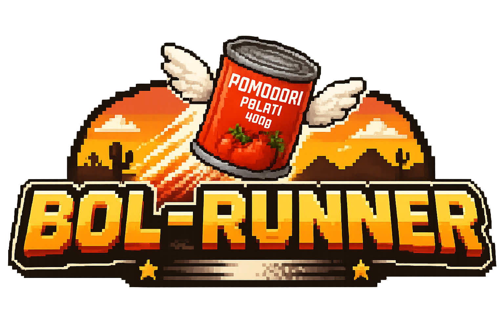
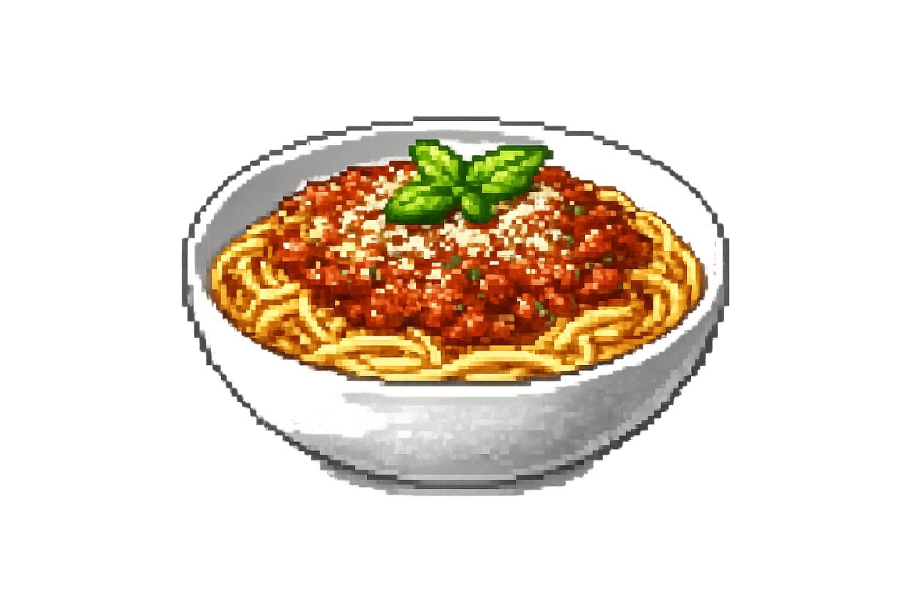

Only the skilled can unlock the secret sauce.
Get highscore of 2000 and the recipe is yours.
Recipe: 0%
Ingredients
- 1 bag of spaghetti (500g)
- Olive oil for frying
- 1 small onion (or 1/2 large onion), finely chopped
- Fresh garlic (about 1/2 bulb, finely chopped)
- 500g room-temp beef mince
- 1 tin whole Italian tomatoes or chopped tomatoes
- 1 sachet tomato paste (roughly 7g)
- 1 whole beef or chicken stock cube
- A splash of red or white wine (white works great), no more than 1/2 cup
- Optional: 2 tsp Worcestershire sauce
- 2 tbsp dried oregano
- 1 fistful fresh basil leaves (dried basil also works)
- Salt (for pasta water and final seasoning)
Method
- First, get your pot of water on to boil.
- While it heats, chop onion and garlic, and warm up a frying pan.
- Add onion first and cook in olive oil over medium-high heat, stirring until translucent (not browned).
- When onion is about halfway cooked, add garlic so it does not burn.
- Finish cooking onion + garlic, then remove both to a plate.
- Heat pan well and add room-temp mince. Brown it properly, aiming for about 1/3 browned bits.
- If very fatty, drain excess fat.
- Once mince is browned, add the rest of the ingredients, including the cooked onion/garlic, tin of tomato, tomato paste, oregano, basil.
- Add stock cube to mince, crushing it into pan and stirring. Add splash of wine, no more than 1/2 cup.
- Keep at a gentle bubble (not boiling).
- Simmer as long as you like, stirring occasionally. If sticking, lower heat. Lid optional for long simmer.
- Salt pasta water to ~1% (about 15 to 20g for ~1.5 to 2L) and taste the water.
- Add spaghetti without breaking. Cook until just under al dente, then drain and serve with sauce.
Notes
- The stock cube adds most of the salt to your sauce, so taste before adding extra salt.
- Worcestershire sauce is a nice addition, but not strictly necessary.
- Browning your mince is very important for flavor. Use a hot enough pan so the mince fries, not boils.
- For pasta water, it should taste well seasoned. If it would not taste good as a soup, it is not salted enough.
- Pasta keeps cooking after draining into the colander.
- If you like al dente pasta, test in the pot. If the white core has fully disappeared, it is slightly overcooked.
- Aim for the tiniest amount of white in the center, just nice enough to eat but still slightly undercooked.

Enjoy.
Secret things: wine gums